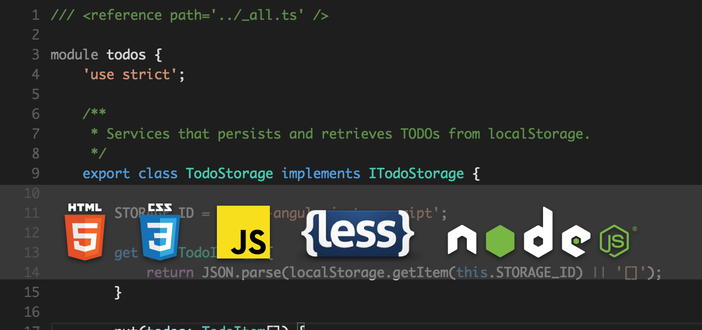
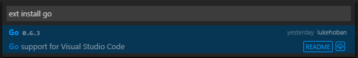

语言 Languages
支持哪些语言 What Languages are Supported
In Visual Studio Code, we have support for many languages out of the box and more through language extensions available on the VS Code Marketplace.
对于VS Code,我们已经内置支持了很多语言（开箱即用）。更多的语言，将利用语言扩展，通过VS Code 市场得到支持。
Tip: You can also add support for your favorite language through TextMate colorizers. See Colorizers to learn how to integrate TextMate .tmLanguage syntax files into VS Code.
小贴士：你还可以通过TextMate的colorizers，来添加支持你最喜欢的语言。参考Colorizers来学习如何通过TextMate的.tmLanguage语法文件集成VS Code。

The richness of support varies across the different languages. The table below provides a brief description of Visual Studio Code's various languages features. Click on any linked item to get an overview of how to use VS Code in the context of that language.
支持的丰富性因语言的不同而不同。下表提供的VS Code的各种语言功能的简要说明。点击任何链接项目获得如何在该语言的上下文中使用VS代码的概述。
| 功能 Features | 语言 Languages |
|---|---|
| 语法着色，括号匹配 Syntax coloring, bracket matching | Batch, Clojure, Coffee Script, Dockerfile, F#, Go, Jade, Java, HandleBars, Ini, Lua, Makefile, Objective-C, Perl, PowerShell, Python, R, Razor, Ruby, Rust, SQL, Visual Basic, XML |
| + 代码片断 Snippets | Groovy, Markdown, Swift |
| + 智能感知，语言分析，提纲 IntelliSense, linting, outline | C++, CSS, HTML, JavaScript, JSON, Less, PHP, Sass |
| + 重构，查找所有的引用 Refactoring, find all references | TypeScript, C# |
语言扩展 Language Extensions
The community is providing VS Code language support for nearly any modern programming language. To see if there are extensions for the language you're interested in, simply bring up the extension Marketplace and filter on the language name. Type kb(workbench.action.showCommands), 'ext inst ' to bring up the extension Marketplace dropdown and then type the language name to filter the results.
社区提供几乎任何现代编程语言 VS Code 语言支持。要看看是否有您感兴趣的语言扩展，只需调出的语言名的扩展名市场和过滤器。键入KB（workbench.action.showCommands），'ext inst '调出扩展市场下拉框，然后键入语言名称来筛选结果。

You can also browse the VS Code Marketplace directly to look for supported languages.
您也可以直接浏览VS code 市场寻找 被支持的语言.
为选中的文件更改语言 Changing the Language for the Selected File
In VS Code, we default the language support for a file based on its filename extension. However at times you may wish to change language modes, to do this click on the language indicator - which is located on the right hand of the status bar. This will bring up the Command Palette for Select Language Mode.
在VS Code，我们默认基于文件的扩展名来对应语言支持。但是有时候你可能希望改变语言模式，点击语言指示器 - 这是位于状态栏的右边。这将弹出选择语言模式的命令面板。
Tip: You can persist file associations with the
files.associationssetting.小贴士: 通过
files.associationssetting，你可以保持文件的关联。
For example, the setting below adds the .myphp file extension to the php language:
例如，下面添加的是设置.myphp文件扩展名为 php 语言：
"files.associations": {
"*.myphp": "php"
}
下一步 Next Steps
Now you know that VS Code has support for the languages you care about. Read on...
现在你知道VS Code支持了对你关心的语言。阅读它吧……
- 提升编辑体验 Editing Evolved - 语言分析，智能感知，高亮显示，查看，跳转到定义，及其他 Lint, IntelliSense, Lightbulbs, Peek and Goto Definition and more
- 调试 Debugging - 这是VS Code真正的亮点This is where VS Code really shines
- 定制 Customization - 主题，设置和键盘绑定 themes, settings and keyboard bindings
常见问题 Common Questions
Q: Can I contribute my own language service?
A: Yes you can! Check out the example language server in the Extending Visual Studio Code documentation.
Q: 我可以贡献自己的语言服务吗?
A: Yes you can! Check out the example language server in the Extending Visual Studio Code documentation.
Q: Can I map additional file extensions to a language?
Q: 我可以附加文件扩展名映射到一个语言吗?
A: Yes, with the files.associations setting you can map file extensions to an existing language either globally or per workspace.
A: 是的。通过 files.associations setting 您可以为全局或每个工作区的文件扩展名映射到现有的语言。
Here is an example that will associate more file extensions to the PHP language:
下面是将文指定的件扩展名关联到PHP语言的例子：
"files.associations": {
"*.php4": "php",
"*.php5": "php"
}
You can also configure full file paths to languages if needed. The following example associates all files in a folder somefolder to PHP:
如果需要，您还可以配置完整的文件路径到指定的语言。下面的示例是将文件夹somefolder中所有的文件关联到PHP：
"files.associations": {
"**/somefolder/*.*": "php"
}
Note that the pattern is a glob pattern that will match on the full path of the file if it contains a / and will match on the file name otherwise.
请注意，此模式是一个全局模式。如果它包含了/将匹配文件的完整路径。否则将匹配文件名。